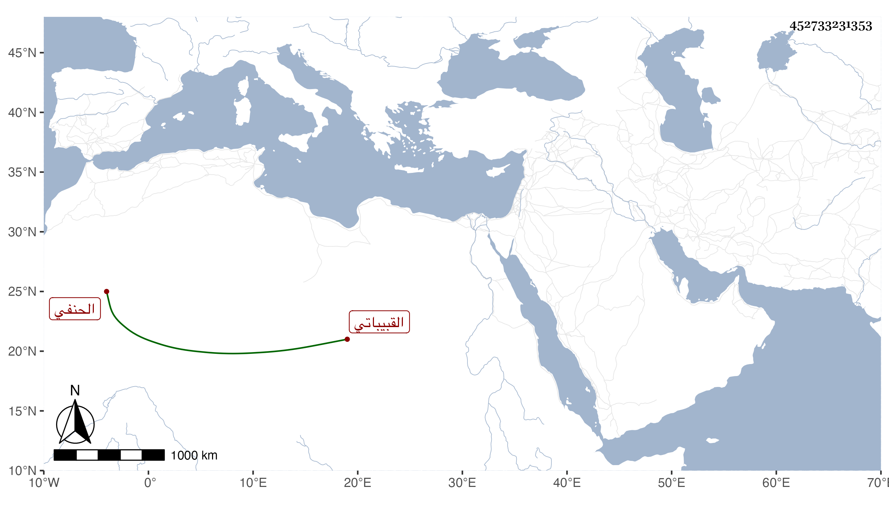

0902Sakhawi.DawLamic.ITO20230111-ara1.EIS1600.452733231353
Biography ID: 452733231353
382
محمد بن بكتمر ناصر الدين القبيباتي الحنفي والد على الماضي . ولد تقريبا سنة تسعين وسبعمائة وحفظ القرآن وحضر دروس الشيخونية وكان من صوفيتها وعرف بمزيد الوسواس مع العبادة والتلاوة ووظائف الخير حتى مات في جمادى الأولى سنة خمس وسبعين وأوصى أن يغسل بالطهر الشيخوني في الخانقاه رحمه الله .
